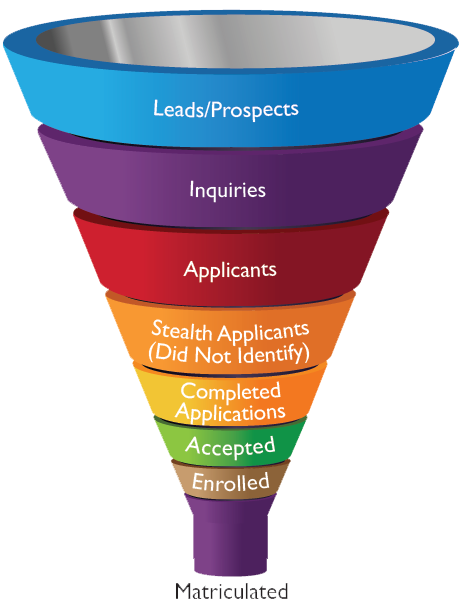

The historical mission of public research universities was to provide opportunity and social mobility for meritorious state residents who cannot afford tuition at elite private colleges and universities. However, these institutions increasingly enroll an affluent student body that is unrepresentative of the socioeconomic and racial diversity of the states they serve.
Policy debates often attribute access inequality to the “achievement gap,” the idea that low-income students have lower academic performance than affluent students (The White House, 2014). However, Table 1 shows that there is an abundance of students in lower socioeconomic quartiles who are well-qualified for admission into competitive universities. Unfortunately, Table 2 shows that high-achieving low-income students are much more likely to attend community college than their affluent peers. Policymakers refer to this phenomenon as “under-matching,” the idea that high-achieving, low-income students do not apply to selective institutions because they lack the proper information and guidance from their family and high school (Hoxby & Avery, 2013). But a recent experimental evaluation by College Board found that interventions that provide these students with more information about their college options and the application process showed no effect on their enrollment in selective institutions, suggesting that student behavior may not be the only reason for access inequality (Gurantz et al., 2019).
An alternative explanation is that the enrollment priorities of public research universities may be biased against low-income students and/or students of color. If enrollment priorities are biased, then fixing student achievement and college application decisions will ultimately fail to overcome access inequality. Unfortunately, most college access policies focus on changing student behavior because policymakers typically know little about university enrollment priorities and, therefore, treat universities as passive recipients of applications. In reality, universities are very purposeful about which students they enroll and spend substantial resources identifying and pursuing desired prospects. We argue that knowing which student populations are targeted by university recruiting efforts is a credible indicator of their enrollment priorities.
This report analyzes university recruiting behavior in order to assess the extent to which university enrollment priorities contribute to access inequality. We begin by providing background information about the “enrollment management” industry and how universities go about recruiting desired prospects. Next, we present results from a study on off-campus recruiting (e.g., visits to local high schools) by public research universities. Most universities make far more out-of-state visits than in-state visits and these out-of-state visits focus on affluent, predominantly White high schools. When public research universities systematically ignore high-achieving, low-income state residents, these students often resort to attending community colleges, which has a dramatic negative effect on their chances of obtaining a bachelor’s degree (Mountjoy, 2018). We conclude by recommending policies that can change socioeconomic and racial bias in university enrollment priorities.
While policy debates about access to higher education often focus on student behavior, universities are purposeful about which students they pursue and expend substantial resources crafting their class. Understanding the relationship between university enrollment behaviors and access inequality requires a basic understanding of the “enrollment management” industry.
Enrollment management (EM) is a profession that integrates techniques from marketing and economics in order to “influence the characteristics and the size of enrolled student bodies” (Hossler & Bean, 1990, p. xiv). EM is also a university administrative structure (e.g., “The Office of Enrollment Management”) that coordinates the activities of offices responsible for admission, financial aid, marketing, and recruiting.
The “iron triangle” of enrollment management states that universities care about the three broad enrollment goals of access, academic prestige, and tuition revenue. Because resources are scarce, the imagery of the iron triangle suggests that pursuing one goal involves trade-offs with other goals. Growing preoccupation with rankings incentivizes universities to prioritize the academic prestige goal. State disinvestment incentivizes universities to prioritize the tuition revenue goal and discourages universities from enrolling large numbers of low-income students. Consistent with this idea, average state funding at public research universities declined from $232 million in 2007-08 to $158 million in 2016-17. Over the same time period, average net tuition revenue increased from $225 million to $493 million.
Empirical research shows that public research universities responded to declining state appropriations by dramatically increasing nonresident enrollment (Jaquette & Curs, 2015). Since nonresident students tend to be more affluent and are less likely to be Black or Latinx than resident students, growth in the share of nonresident students was associated with declines in the share of Pell recipients and Black/Latinx students at public research universities. At prestigious public research universities (e.g., University of Michigan, University of California-Berkeley), nonresident enrollment growth has a negative causal effect on enrollment opportunities for resident students. While prestigious public research universities enjoy strong demand from high-achieving out-of-state students, the majority of public research universities (e.g., University of Arizona) have demand from out-of-state students who could not gain admission to their own state flagship. Research shows that many non-prestigious public flagship universities adopted institutional “merit aid” programs that specifically target out-of-state students with mediocre academic achievement.
Figure 1 depicts the “enrollment funnel,” a conceptual tool the EM industry uses to describe stages in student recruitment in order to inform targeted recruiting interventions. The vast majority of research on enrollment management focuses on the final stages of the enrollment funnel, specifically which applicants are admitted (e.g., Alon, 2009; Karabel, 2005; Karen, 1990; Posselt, 2016) and the use of financial aid “leveraging” to convert admits to enrollees (e.g., Doyle, 2010; McPherson & Schapiro, 1998; Waddell & Singell, 2011). By contrast, the enrollment management industry expends substantial resources on earlier stages in the funnel. “Prospects” are “all the potential students you would want to attract to your institution” (Campbell, 2017). “Inquiries” are prospects that contact the university, including those who respond to university solicitations (e.g., email, brochure) and those who reach out on their own (e.g., sending SAT/ACT scores to a university, completing a form on the admissions website).

Universities identify prospects primarily by purchasing “student lists” from College Board and ACT. For example, from 2010 to 2018, the University of Alabama paid $1.9 million to College Board and $349k to ACT, Inc (University of Alabama, 2019). Student lists contain contact details and background information (demographic, socioeconomic, and academic) about individual prospects. Universities control which prospects are included in the list by selecting on criteria such as zip code, race, and academic achievement. Noel-Levitz (2017) found that the median public university purchases about 64,000 names.
Once identified, prospects are targeted with recruiting interventions aimed at soliciting inquiries and applications (Clinedinst & Koranteng, 2017; Noel-Levitz, 2018). Face-to-face interventions include off-campus visits by universities admissions representatives (e.g., to a local high school) and on-campus visits by prospects. Non face-to-face interventions include email, mail (e.g., postcards, brochures), and texts. Additionally, universities utilize paid advertising (e.g., pay-per-click ads from Google, cookie-driven ads that target prospects who visit your website) and social media (e.g., Twitter, Instagram, YouTube) as a means of generating inquiries and creating positive “buzz” amongst prospects. Given the rise in “stealth applicants” who do not inquire before applying (Dupaul & Harris, 2012), social media enables universities to tell their story to prospects who do not contact the university and do not wish to be contacted.
The “data science” revolution in market research has given birth to a niche industry of higher education enrollment management/marketing consulting firms. These firms help universities identify prospects (e.g., which criteria to select when purchasing student lists) and decide which prospects should receive which recruiting interventions. For example, from 2010 to 2018 the University of Alabama paid $4.4 million to the EM consulting firm Hobsons (University of Alabama, 2019) (2018 CPI). The consultancies integrate university-owned data (e.g., historical data on applicants, IP addresses that visit the university website), publicly available data, and proprietary data. As an example of proprietary data, one enrollment management consultancy told us they know the household income, house value, and detailed expenditures (e.g., annual expenditure on hockey equipment) of every household in the US. Firms make recommendations by applying these data sources to analytic tools that predict application and enrollment probabilities for each prospect and also predict the effect of recruiting interventions on these probabilities.
Given our research focus on off-campus recruiting, what do we know about the role of off-campus visits in student recruitment? In the admissions world, “travel season” refers to the mad dash between Labor Day and Thanksgiving when admissions officers host hotel receptions, college fairs, and visit high schools across the country (Stevens, 2007). Noel-Levitz (2018) found that public universities spent 18% of their marketing and recruiting budget on “travel to high schools and college fairs,” compared to 15% for on-campus visits and 14% for student list purchases.1 Stevens (2007), who analyzed off-campus recruiting efforts at a selective, private liberal arts college, found that the College visited the same schools year after year because successful recruiting depends on long-term relationships with high schools. Further, the College tended to visit affluent schools, and private schools in particular, because these schools enroll high-achieving students who can afford tuition and because these schools have the resources and motivation to host a successful visit.
Analyses of the effects of off-campus recruiting broadly conceive off-campus recruiting as a means of simultaneously identifying prospects and connecting with prospects already being targeted through mail/email (e.g., Clinedinst & Koranteng, 2017; Noel-Levitz, 2016; Stevens, 2007). Noel-Levitz (2018) found that off-campus visits were the second highest source of inquiries (after student list purchases), accounting for 19% of inquiries for the median public university. Off-campus visits were also the third highest source of enrollees (after stealth applicants and on-campus visits), accounting for 16% of enrollees (Noel-Levitz, 2018). Holland (2019), who analyzed recruiting from the perspective of high school students, found that high school visits influenced where students applied and where they enrolled, particularly first-generation students. By contrast, affluent students with college-educated parents tended to be less taken by overtures from universities and more concerned about university prestige. Finally, echoing findings from market research (Noel-Levitz, 2018), Stevens (2007) found that high school visits were instrumental for maintaining strong relationships with guidance counselors at “feeder schools.” These relationships were essential because “the College’s reputation and the quality of its applicant pool are dependent upon its connections with high schools nationwide” (Stevens, 2007, p. 53).
While prior research finds that off-campus recruiting influences the application and enrollment decisions of underrepresented students and accounts for a larger share of university marketing/recruiting budgets, our research is the first to systematically investigate which high schools receive visits by which universities.
We present findings from a research project that collected data on off-campus recruiting visits by public research universities. The project goal is to assess socioeconomic, racial, and geographic bias in which schools and communities receive visits. The results presented here analyze off-campus recruiting visits during the 2017 calendar year by a selection of 15 public research universities.
We used two data collection strategies. First, university admissions websites often list upcoming off-campus recruiting events on pages that advertise admissions representatives coming “near you” (e.g., here). Therefore, we used “web-scraping” to capture this data on off-campus visits. Second, we issued public records requests to universities asking for data on all their off-campus recruiting visits. Han, Jaquette, and Salazar (2019) provide more detail about how we define off-campus recruiting events, data collection methods, data processing steps, and data quality checks. Appendix Table A1 summarizes the data sources and data quality checks conducted for each university analyzed in this report.
Table 3 shows the number of recruiting visits by event type (e.g., public high school, private high school) and whether the visit was in-state or out-of-state for the 15 public research universities in our sample. Across all universities, the majority of visits are to public high schools. The most dramatic result is that most universities made more out-of-state than in-state visits. Seven universities made more than twice as many out-of-state visits. Compared to in-state visits, a disproportionate number of out-of-state visits were to private high schools.2 We find that recruiting patterns are often tied to state funding. Universities that had the lowest state funding tended to turn to out-of-state recruiting to generate greater revenue from tuition.
On the other hand, universities that received more state funding tended to have more complete coverage of their home state. For example, North Carolina State University made about twice as many in-state visits than out-of-state visits. Several universities in our sample also made substantial amounts of visits to community colleges in their state.
Figure 2 shows the average median household income in zip codes of visited public high schools compared to non-visited public high schools for in-state and out-of-state visits. As seen, out-of-state visits are heavily focused on affluent communities across all the universities in our sample. For example, the University of Massachusetts-Amherst visited out-of-state public high schools in zip codes where the average median household income was $115k while the average income for non-visited schools was $64k, giving a difference of $51k. The average income disparity between visited and non-visited public high schools across all institutions in our sample is around $40k. Even after using regression models to control for factors such as academic achievement and school size, we find that affluent out-of-state schools are significantly more likely to receive a visit.3
Figure 3 shows a map of visited and non-visited public high schools by the University of Pittsburgh in the Chicago metropolitan area. Each zip code is shaded according to the median household income of the area. The blue circle markers indicate the location of a public high school, and filled circle markers indicate that the high school is visited by the University of Pittsburgh. Visited schools are largely concentrated in the more affluent communities located in the northeastern region of the metropolitan area. Schools near the outer edges of the metro that have lower median household incomes did not receive a visit.
Income bias in in-state public high school visits also exists across the majority of the institutions in our sample, but to a lesser extent. For example, the difference in average median household income between visited and non-visited in-state public high schools by the University of California-Berkeley is $19k. The average income disparity across all institutions is around $11k. A couple of the institutions, University of California-Irvine and North Carolina State University, actually visited public high schools in their home state with a lower average income than schools not visited.
Figure 4 shows the average racial compositions of visited high schools compared to non-visited high schools for in-state and out-of-state visits by the institutions in our sample. Similar to the income results, out-of-state visits to public high schools show the most evidence of racial bias. A majority of the institutions in our sample visited out-of-state public high schools with an overall higher share of White students and lower share of Black, Latinx, and Native American students. For example, the University of Colorado-Boulder visited out-of-state public high schools where White students make up 56% of the combined total, as compared to 49% in non-visited high schools. At the same time, Black, Latinx, and Native American students make up 7%, 20%, and less than 0.5% of visited public high school students, respectively, compared to 16%, 27%, and close to 1% of non-visited students. For most of the institutions in our sample, regression results show that the racial bias in out-of-state public high school visits persists even after controlling for other school characteristics.
Figure 5 again shows a map of visited and non-visited public high schools by the University of Pittsburgh in the Chicago metropolitan area. Each zip code is shaded according to the proportion of people who identify as Black, Latinx, or Native American. The majority of visited high schools are concentrated in the northern part of the metro, where there is a low proportion of Black, Latinx, and Native American students. Communities of color are located primarily near the southeastern part of the region, and these public high schools received very few visits.
When looking at out-of-state visits to private high schools, Figure 4 shows that the racial composition of students remain relatively consistent between visited and non-visited schools. However, private high schools in general have a higher percentage of White students than public high schools, and universities tend to visit a disproportionate number of out-of-state private high schools. Therefore, the overall population of out-of-state students visited by the universities in our sample tended to be more White.
In-state visits, on the other hand, show inconsistent evidence of racial bias across our sample institutions. For example, the University of Alabama visited schools with a larger percentage of White students and smaller percentage of Black, Latinx, and Native American students, whereas the University of California-Irvine visited a higher proportion of students of color. Nevertheless, in comparison to out-of-state visits to public high schools, the difference in average racial composition between visited and non-visited students remains relatively small across all cases.
Our research suggests that policy debates about college access must be reframed from a focus on student deficiencies towards a focus on university enrollment priorities. Mainstream policy debates highlight the “achievement gap” and “under-matching” – high-achieving students do not apply to selective colleges – as primary causes of racial and socioeconomic inequality in college access. These explanations point to deficiencies of students and K-12 schools and, in turn, motivate policy interventions that attempt to fix students. However, if university enrollment priorities are biased, then fixing student achievement and student decision-making alone will fail to fix college access.
Using recruiting behavior as an indicator of university enrollment priorities, our results indicate socioeconomic and racial bias in the enrollment priorities of many public research universities. The majority of public research universities in our analysis sample made far more out-of-state recruiting visits than in-state recruiting visits. Out-of-state recruiting visits were concentrated in affluent, predominantly White public and private schools. This income and racial bias persisted even after controlling for school size and academic achievement.
Although policy debates discuss public funding primarily in terms of consequences for student behavior (e.g., funding cuts cause net price to rise and affordability to decline), public funding also dramatically affects university enrollment priorities. Cuts to public funding shift higher education from a public good to a private good, creating incentives to prioritize customers who pay the most. Nonresident tuition price is typically two to three times higher than resident price. Public research universities responded to state funding cuts following the 2008 recession by dramatically growing nonresident enrollment. Many public flagship universities adopted institutional financial aid policies that explicitly target out-of-state students with mediocre academic achievement. We found a strong relationship between state funding and recruiting behavior. Universities with weak state funding tended to make the most out-of-state recruiting visits. Universities with strong state funding tended to visit a larger share of in-state high schools and were more likely to visit in-state schools with large shares of low-income students and non-White students.
We highlight two broad approaches to public funding as a means of changing university enrollment priorities: first, increase block grant funding such that universities can pay for the cost of educating students without relying on tuition; and, second, increase need-based financial aid as a means of increasing the purchasing power of poor students.
State appropriations are the most important source of block grant funding to universities. When state appropriations decline, universities ask permission to increase resident tuition price. Granting this request reduces the number of state residents who can afford in-state public universities. Denying this request reduces the ability of public universities to survive by enrolling state residents and increases the incentive to enroll nonresident students. By contrast, if state appropriations increased substantially, states could demand a reduction in resident tuition price and universities could survive by enrolling state residents.
Need-based grant aid programs can be thought of as voucher programs that follow students. These programs increase the purchasing power of poor students, making them more financially attractive to universities that rely on tuition revenue. The most important programs are federal Pell Grant and state need-based grant aid. Though not a grant, income sharing agreements (ISAs) represent a private sector approach to increasing student purchasing power. Policy changes that substantially increase the maximum award (e.g., increasing the Pell maximum from $6,195 to $10,000) enable universities to enroll low-income students without offering substantial need-based institutional aid, thereby increasing the number of low-income students they are willing to enroll.
Following decades of pessimism about public funding for higher education, many states are adopting “free college” policies and presidential candidates have unveiled plans to dramatically increase federal investments. State “free college” policies – often called “free tuition” policies are voucher programs that provide eligible students with grant aid to cover costs associated with attending in-state public institutions. These programs are designed to be combined with other sources of grant aid (e.g., Pell, state need- and merit-based aid). Programs differ on several dimensions (Jones & Berger, 2018): which costs can be covered (e.g., tuition, fees, living expenses); “first dollar” (i.e., receiving other grant aid does not reduce award amount) versus “last dollar” (i.e., award only covers eligible costs not covered by other grant aid); whether award can be used at public universities or only community colleges; etc.
Democrat presidential candidates Bernie Sanders and Elizabeth Warren have both proposed policies to (1) eliminate tuition and fees at public colleges and universities through federal matching funds to states and (2) to finance the non-tuition costs of low- and middle-income students by increasing federal grant aid to students. Other candidates have proposed making community college free but not public universities (e.g., Joe Biden) and dramatically increasing the size of Pell maximum.
While most analyses of state “free college” policies and presidential candidate plans focus on student effects, we comment briefly on the effects on university behavior. State “free college” policies are similar to state need-based aid programs in that they are vouchers that follow students to postsecondary institutions. These programs increase the purchasing power of poor students, making them more financially attractive to postsecondary institutions. We are critical of programs that only permit community college attendance because these programs push students to community colleges and do not incentivize public universities to expand low-income enrollment. If we care about BA attainment for low-income students, then “free college” programs must permit public university enrollment because empirical research unequivocally finds that starting at a community college as opposed to a public university has a dramatic negative causal effect on the probability of receiving a BA (Mountjoy, 2018). Many programs that allow university attendance are “last dollar” programs or do not cover living costs (Jones & Berger, 2018). As a result, average award amount and total program expenditure tends to be quite modest. These programs may not make public universities sufficiently attractive to low-income students nor low-income students sufficiently attractive to public universities.
The Sanders and Warren plans would have more dramatic effects on university enrollment priorities because they far exceed the combined funding of state “free college” programs. In theory, the plan to replace undergraduate tuition and fee revenue with federal-state match block grant funding would eliminate university reliance on undergraduate tuition and remove disincentives against enrolling large numbers of students who cannot afford tuition without need-based institutional aid. In contrast to federal-state block grants, plans increase federal higher education funding by dramatically increasing the Pell grant maximum (e.g., from $6,125 to $12,000) maintain university reliance on tuition revenue but increase university willingness to expand low-income enrollment by increasing the purchasing power of poor students.
Policymakers can also affect university behavior through regulation. In our research, the only universities that made more in-state than out-of-state visits were located in states – North Carolina and California – with strong nonresident enrollment caps. However, we strongly caution policymakers that regulation is not an alternative to adequate funding. State funding for higher education in North Carolina and California remains above the national average. Without adequate public funding, restrictions on university revenue-generating behavior causes educational quality to decline (e.g., higher student-to-teacher ratios, students cannot enroll in classes necessary for graduation), gaming behavior to overcome regulations, or unintended consequences. For example, capping nonresident enrollment incentivizes universities to enroll in-state students that do not require need-based financial aid.
We recommend that financial regulations focus on limiting expenditures that do not have educational value. For example, students from affluent households have strong preferences for consumption amenities. In a paradoxical example of “he who pays the piper calls the tune,” public flagship universities respond to state funding cuts by building luxury facilities (e.g., luxury dorms and recreational facilities, pools with a “lazy river”) designed to attract nonresident students.Construction of these facilities is often financed by bonds. Paying annual interest on these bonds increases costs and, in turn, tuition price for decades, perpetuating university enrollment preferences towards students who pay the most. Restrictions on debt financing could reduce this vicious cycle, but the better approach would be to provide adequate public funding so that universities need not provide lavish amenities as a means of generating revenue.
Regulations may be necessary to overcome racial bias in university enrollment priorities. While state funding cuts provide a rationale for the income bias we observed in university recruiting behavior, it does not explain the finding that public research universities were less likely to visit out-of-state schools with high non-White enrollment, even after controlling for income, school enrollment size, and academic achievement. Jack finds that universities pursue racial diversity by recruiting students of color from predominantly White public and private schools. Our findings that universities recruit at affluent, predominantly White schools may be an example of universities simultaneously pursuing tuition revenue and racial diversity. Alternatively, these results may be due to institutional racism with respect to assumptions made about students of color from predominantly non-White schools. Regardless, it is unacceptable for universities to systematically ignore communities of color. One policy solution could be to publicize the extent to which universities only enroll students of color from affluent, predominantly White schools and communities.
State policymakers often rationalize cuts to public research universities based on the assumption that these universities can generate their own revenues. Our research finds that most public research universities successfully grow tuition revenue to compensate for state cuts. However, forcing universities to survive from tuition revenue compels them to prioritize customers who pay the most. Public flagship universities expend substantial resources recruiting and offering “merit” aid to mediocre out-of-state students who are rejected from public universities in their own state, while high-achieving, low-income students are neglected, funneled to community colleges that dramatically reduce their chances of getting a BA degree. This is not a meritocracy. Nor is it an evil plot by universities. It is a rational response to incentives created by government disinvestment in public higher education. Policymakers must take responsibility for providing a financial pathway that enables public universities to flourish by serving the mission of social mobility they were founded to serve.
Alon, S. (2009). The evolution of class inequality in higher education: Competition, exclusion, and adaptation. American Sociological Review, 74(5), 731–755.
Campbell, A. (2017). Higher education marketing: How to master your admissions funnel. Retrieved from https://hop-online.com/blog/higher-education-marketing-admissions-process/
Clinedinst, M., & Koranteng, A.-M. (2017). 2017 state of college admission. National Association of College Admissions Officers.
Doyle, W. R. (2010). Changes in institutional aid, 1992-2003: The evolving role of merit aid. Research in Higher Education, 51(8), 789–810.
Dupaul, S., & Harris, M. S. (2012). Secret shoppers: The stealth applicant search for higher education. Journal of College Admission, (Spring 2012), 8–16. Journal Article.
Gurantz, O., Howell, J., Hurwitz, M., Larson, C., Pender, M., & White, B. (2019). Realizing your college potential? Impacts of college board’s rycp campaign on postsecondary enrollment (EdWorkingPaper No. 19-40). Annenberg Institute at Brown University. Retrieved from http://edworkingpapers.com/ai19-40
Holland, M. M. (2019). Divergent paths to college: Race, class, and inequality in high schools. New Brunswick, NJ: Rutgers University Press.
Hossler, D., & Bean, J. P. (1990). The strategic management of college enrollments (pp. xxii, 330p.). San Francisco, CA: Jossey-Bass.
Hoxby, C. M., & Avery, C. (2013). The missing “one-offs”: The hidden supply of high merit students for highly selective colleges. The Brookings Institution, March 2013.
Jaquette, O., & Curs, B. R. (2015). Creating the out-of-state university: Do public universities increase nonresident freshman enrollment in response to declining state appropriations? Research in Higher Education, 56(6), 535–565.
Jones, T., & Berger, K. (2018). A promise fulfilled: A framework for equitable free college programs. The Education Trust. Retrieved from https://edtrust.org/resource/a-promise-fulfilled/
Karabel, J. (2005). The chosen: The hidden history of admission and exclusion at harvard, yale, and princeton (pp. viii, 711p., [16]p. of plates). Boston, MA: Houghton Mifflin Co.
Karen, D. (1990). Toward a political-organizational model of gatekeeping: The case of elite colleges. Sociology of Education, 63(4), 227–240.
McPherson, M. S., & Schapiro, M. O. (1998). The student aid game. Princeton, NJ: Princeton University Press.
Mountjoy, J. (2018). Community colleges and upward mobility. Princeton & Chicago Booth. Retrieved from https://economics.stanford.edu/sites/g/files/sbiybj9386/f/mountjoy_2018_community_colleges_and_upward_mobility.pdf
Noel-Levitz, R. (2016). 2016 report: Cost of recruiting an undergraduate student for four-year and two-year institutions. Ruffalo Noel-Levitz. Retrieved from https://www.ruffalonl.com/papers-research-higher-education-fundraising/campus-organizational-strategy/benchmark-reports-higher-education
Noel-Levitz, R. (2017). 2017 marketing and student recruitment report of effective practices. Ruffalo Noel-Levitz. Retrieved from https://www.ruffalonl.com/papers-research-higher-education-fundraising/campus-organizational-strategy/benchmark-reports-higher-education
Noel-Levitz, R. (2018). 2018 marketing and student recruitment report of effective practices. Ruffalo Noel-Levitz. Retrieved from http://learn.ruffalonl.com/rs/395-EOG-977/images/RNL_2018_Student_Recruitment_Marketing_Report_EM-19.pdf
Posselt, J. R. (2016). Inside graduate admissions: Merit, diversity, and faculty gatekeeping (pp. x, 250pages). Cambridge, MA: Harvard University Press.
Stevens, M. L. (2007). Creating a class: College admissions and the education of elites (p. 308 p.). Cambridge, MA: Harvard University Press.
The White House. (2014). Increasing college opportunity for low-income students. The Executive Office of the President.
University of Alabama. (2019). Open records. Retrieved January 13, 2019, from http://open.ua.edu/
Waddell, G. R., & Singell, J., Larry D. (2011). Do no-loan policies change the matriculation patterns of low-income students? Economics of Education Review, 30(2), 203–214.